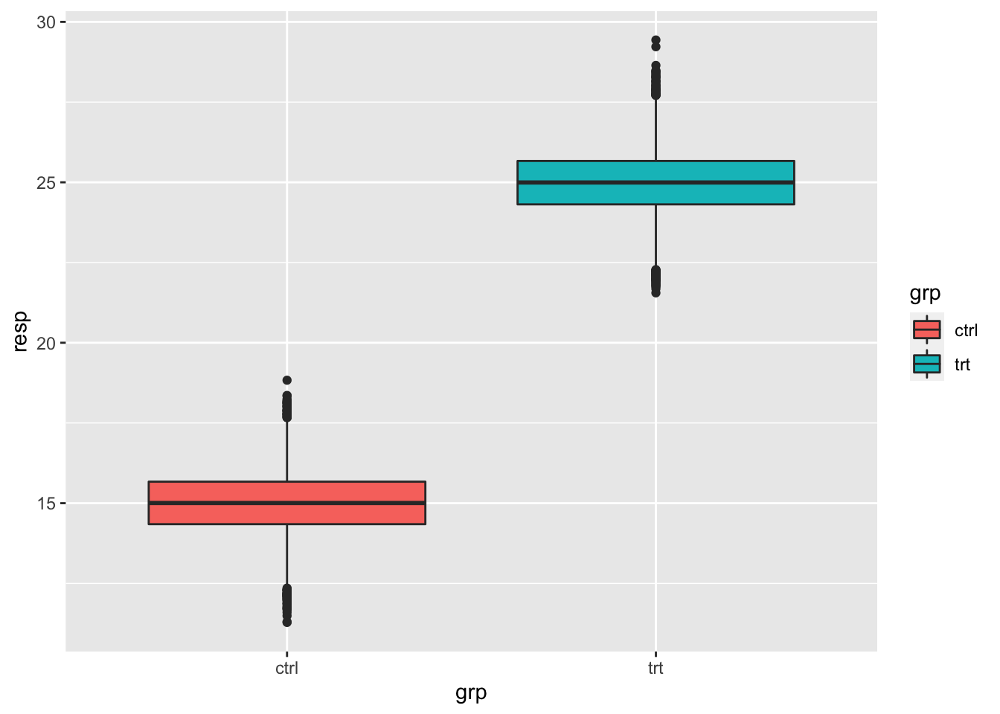
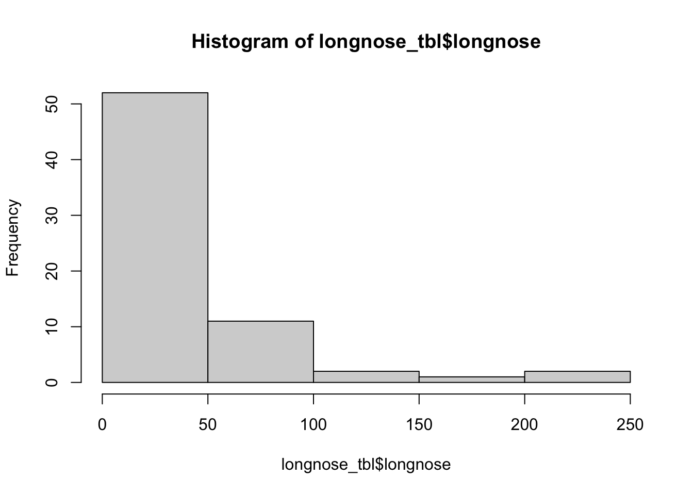

40 Poisson Regression
Version vom October 21, 2022 um 14:57:20

40.1 Genutzte R Pakete für das Kapitel
Wir wollen folgende R Pakete in diesem Kapitel nutzen.
pacman::p_load(tidyverse, magrittr, conflicted, broom,
parameters, performance, gtsummary, MASS,
pscl)
conflict_prefer("select", "dplyr")
conflict_prefer("filter", "dplyr")
conflict_prefer("mutate", "dplyr")
cbbPalette <- c("#000000", "#E69F00", "#56B4E9", "#009E73",
"#F0E442", "#0072B2", "#D55E00", "#CC79A7")Am Ende des Kapitels findest du nochmal den gesamten R Code in einem Rutsch zum selber durchführen oder aber kopieren.
40.2 Daten
Die Daten zu den langnasigen Hechten stammt von Salvatore S. Mangiafico - An R Companion for the Handbook of Biological Statistics.
| longnose | area | do2 | maxdepth | no3 | so4 | temp |
|---|---|---|---|---|---|---|
| 13 | 2528 | 9.6 | 80 | 2.28 | 16.75 | 15.3 |
| 12 | 3333 | 8.5 | 83 | 5.34 | 7.74 | 19.4 |
| 54 | 19611 | 8.3 | 96 | 0.99 | 10.92 | 19.5 |
| 19 | 3570 | 9.2 | 56 | 5.44 | 16.53 | 17 |
| 37 | 1722 | 8.1 | 43 | 5.66 | 5.91 | 19.3 |
| 2 | 583 | 9.2 | 51 | 2.26 | 8.81 | 12.9 |
| … | … | … | … | … | … | … |
| 23 | 18422 | 9.9 | 45 | 1.58 | 8.37 | 20.1 |
| 2 | 6311 | 7.6 | 46 | 0.64 | 21.16 | 18.5 |
| 26 | 1450 | 7.9 | 60 | 2.96 | 8.84 | 18.6 |
| 20 | 4106 | 10 | 96 | 2.62 | 5.45 | 15.4 |
| 38 | 10274 | 9.3 | 90 | 5.45 | 24.76 | 15 |
| 19 | 510 | 6.7 | 82 | 5.25 | 14.19 | 26.5 |
poisson_fit <- glm(longnose ~ area + do2 + maxdepth + no3 + so4 + temp,
longnose_tbl, family = poisson)
normal_fit <- glm(longnose ~ area + do2 + maxdepth + no3 + so4 + temp,
longnose_tbl, family = gaussian)
poisson_fit %>% summary
Call:
glm(formula = longnose ~ area + do2 + maxdepth + no3 + so4 +
temp, family = poisson, data = longnose_tbl)
Deviance Residuals:
Min 1Q Median 3Q Max
-9.2343 -4.0856 -1.6619 1.7709 14.3616
Coefficients:
Estimate Std. Error z value Pr(>|z|)
(Intercept) -1.5643879535 0.2818029375 -5.5514 0.00000002835 ***
area 0.0000384263 0.0000020794 18.4796 < 0.00000000000000022 ***
do2 0.2258789585 0.0212563866 10.6264 < 0.00000000000000022 ***
maxdepth 0.0115493150 0.0006687680 17.2695 < 0.00000000000000022 ***
no3 0.1813114263 0.0106815488 16.9743 < 0.00000000000000022 ***
so4 -0.0068097229 0.0036222591 -1.8800 0.06011 .
temp 0.0785448817 0.0065300439 12.0282 < 0.00000000000000022 ***
---
Signif. codes: 0 '***' 0.001 '**' 0.01 '*' 0.05 '.' 0.1 ' ' 1
(Dispersion parameter for poisson family taken to be 1)
Null deviance: 2766.88 on 67 degrees of freedom
Residual deviance: 1590.04 on 61 degrees of freedom
AIC: 1936.86
Number of Fisher Scoring iterations: 5## ?berschlagsrechnung f?r die Dispersion
## (aus dem glm summary): Residual deviance: 1590.04 on 61 degrees of freedom
1590.04/61[1] 26.06623quasipoisson_fit <- glm(longnose ~ area + do2 + maxdepth + no3 + so4 + temp,
longnose_tbl, family = quasipoisson)
quasipoisson_fit %>% summary
Call:
glm(formula = longnose ~ area + do2 + maxdepth + no3 + so4 +
temp, family = quasipoisson, data = longnose_tbl)
Deviance Residuals:
Min 1Q Median 3Q Max
-9.2343 -4.0856 -1.6619 1.7709 14.3616
Coefficients:
Estimate Std. Error t value Pr(>|t|)
(Intercept) -1.564387953 1.528071553 -1.0238 0.309989
area 0.000038426 0.000011275 3.4080 0.001164 **
do2 0.225878959 0.115262389 1.9597 0.054605 .
maxdepth 0.011549315 0.003626383 3.1848 0.002282 **
no3 0.181311426 0.057920513 3.1303 0.002679 **
so4 -0.006809723 0.019641637 -0.3467 0.730011
temp 0.078544882 0.035409050 2.2182 0.030273 *
---
Signif. codes: 0 '***' 0.001 '**' 0.01 '*' 0.05 '.' 0.1 ' ' 1
(Dispersion parameter for quasipoisson family taken to be 29.403319)
Null deviance: 2766.88 on 67 degrees of freedom
Residual deviance: 1590.04 on 61 degrees of freedom
AIC: NA
Number of Fisher Scoring iterations: 5negativebinomial_fit <- glm.nb(longnose ~ area + do2 + maxdepth + no3 + so4 + temp,
longnose_tbl)
negativebinomial_fit %>% summary
Call:
glm.nb(formula = longnose ~ area + do2 + maxdepth + no3 + so4 +
temp, data = longnose_tbl, init.theta = 1.666933879, link = log)
Deviance Residuals:
Min 1Q Median 3Q Max
-2.46010 -0.98759 -0.44256 0.48249 2.27756
Coefficients:
Estimate Std. Error z value Pr(>|z|)
(Intercept) -2.945664673 1.305427827 -2.2565 0.0240409 *
area 0.000046513 0.000013002 3.5774 0.0003470 ***
do2 0.341916152 0.105012333 3.2560 0.0011301 **
maxdepth 0.009537603 0.003465417 2.7522 0.0059192 **
no3 0.207240064 0.056268918 3.6830 0.0002305 ***
so4 -0.002157482 0.015165776 -0.1423 0.8868747
temp 0.094595849 0.033149947 2.8536 0.0043230 **
---
Signif. codes: 0 '***' 0.001 '**' 0.01 '*' 0.05 '.' 0.1 ' ' 1
(Dispersion parameter for Negative Binomial(1.6669) family taken to be 1)
Null deviance: 127.6700 on 67 degrees of freedom
Residual deviance: 73.6483 on 61 degrees of freedom
AIC: 610.175
Number of Fisher Scoring iterations: 1
Theta: 1.667
Std. Err.: 0.289
2 x log-likelihood: -594.175 ## wir machen mit den quasifit weiter
quasipoisson_fit %>% tidy(conf.int = TRUE, exponentiate = TRUE)# A tibble: 7 × 7
term estimate std.error statistic p.value conf.low conf.high
<chr> <dbl> <dbl> <dbl> <dbl> <dbl> <dbl>
1 (Intercept) 0.209 1.53 -1.02 0.310 0.0103 4.11
2 area 1.00 0.0000113 3.41 0.00116 1.00 1.00
3 do2 1.25 0.115 1.96 0.0546 0.997 1.57
4 maxdepth 1.01 0.00363 3.18 0.00228 1.00 1.02
5 no3 1.20 0.0579 3.13 0.00268 1.07 1.34
6 so4 0.993 0.0196 -0.347 0.730 0.953 1.03
7 temp 1.08 0.0354 2.22 0.0303 1.01 1.16## How much is the fish?
sample_size <- 10000
longnose_small_tbl <- tibble(grp = rep(c(0, 1), each = sample_size),
resp = 15 + 10 * grp + rnorm(2 * sample_size, 0, 1)) %>%
mutate(resp_count = round(resp),
grp = factor(grp, labels = c("ctrl", "trt")))
ggplot(longnose_small_tbl, aes(x = grp, y = resp, fill = grp)) +
geom_boxplot()
glm(resp_count ~ grp, data = longnose_small_tbl, family = gaussian)
Call: glm(formula = resp_count ~ grp, family = gaussian, data = longnose_small_tbl)
Coefficients:
(Intercept) grptrt
15.0093 9.9724
Degrees of Freedom: 19999 Total (i.e. Null); 19998 Residual
Null Deviance: 519200
Residual Deviance: 21952 AIC: 58626glm(resp_count ~ grp, data = longnose_small_tbl, family = poisson) %>%
tidy(exponentiate = TRUE)# A tibble: 2 × 5
term estimate std.error statistic p.value
<chr> <dbl> <dbl> <dbl> <dbl>
1 (Intercept) 15.0 0.00258 1049. 0
2 grptrt 1.66 0.00327 156. 0quasipoisson_fit <- glm(longnose ~ temp,
longnose_tbl, family = quasipoisson)
quasipoisson_fit %>% tidy(conf.int = TRUE, exponentiate = TRUE)# A tibble: 2 × 7
term estimate std.error statistic p.value conf.low conf.high
<chr> <dbl> <dbl> <dbl> <dbl> <dbl> <dbl>
1 (Intercept) 13.8 0.919 2.86 0.00570 2.19 80.4
2 temp 1.06 0.0468 1.16 0.252 0.963 1.16gaussian_fit <- glm(longnose ~ temp,
longnose_tbl, family = gaussian)
gaussian_fit %>% tidy(conf.int = TRUE, exponentiate = TRUE)# A tibble: 2 × 7
term estimate std.error statistic p.value conf.low conf.high
<chr> <dbl> <dbl> <dbl> <dbl> <dbl> <dbl>
1 (Intercept) 0.416 35.1 -0.0250 0.980 6.05e-31 2.86e29
2 temp 8.19 1.83 1.15 0.255 2.26e- 1 2.97e 2hist(longnose_tbl$longnose)
summary(longnose_tbl$longnose) Min. 1st Qu. Median Mean 3rd Qu. Max.
1.000 12.000 23.000 38.809 40.500 239.000